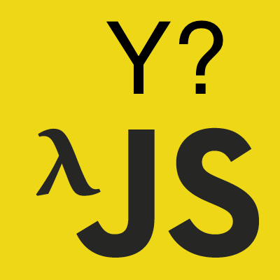
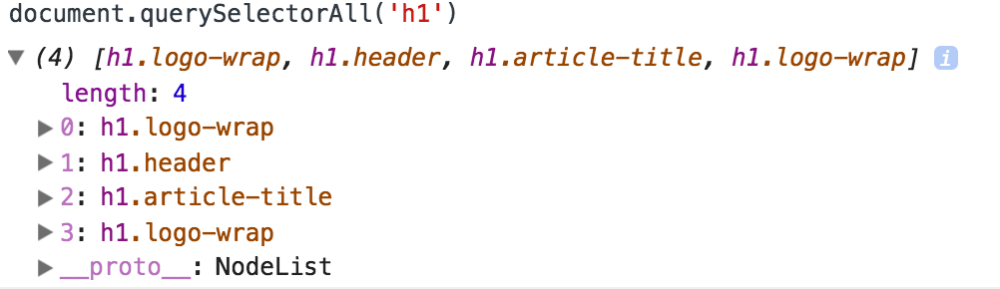

이 포스트는 인프런에서 진행한 유인동 님의 함수형 자바스크립트를 듣고 감명 받아서 쓴 글이다.
사실 underscore, lodash 등 함수형 패러타임으로 코드를 짤 수 있게 끔
미리 이런 함수들을 제공하는 라이브러리들을 쓰고, 이 포스트는 그닥 볼 필요가 없다.
하지만 이런 원리를 알고 접근을 하다보면 위 라이브러리를 쓴다고 하더라도 추가로 필요한 나의 코드를 함수형으로 더 짜기 유용하지 않을까?
왜 쓸까?
우선 함수형 프로그래밍의 핵심을 꼽아보라고 하면
- Filter
- Map
- Reduce
- Find
등등을 꼽아볼 수가 있다.
기본적으로 ES5부터는
등등의 메소드가 이미 존재한다.
단순히 메소드이기 때문에 함수로 만들고자 이 행위를 하는 것일까?
아니다.
이 메소드들은 ArrayLike나 돌림직한(?), 돌릴 수 있는 데이터(key와 value의 쌍으로 이루어져있는 object 등등)들에게는 적용되지 못한다.
ArrayLike…?

ArrayLike는 배열 같지만 배열이 아니다.
다음과 같은 특징을 갖는다.
- length 프로퍼티가 존재한다.
- index로 접근이 가능하다.
- Symbol(Symbol.iterator) 프로퍼티가 있기 때문에 이터러블하다.
- 하지만 Array의 프로토타입을 상속받지 않는다.
1~3번 때문에 배열 같지만, 정작 4번 때문에 배열의 메소드들은 사용하지 못한다는 점이 특징이다.
여하튼, 위 메소드들은 순수 배열만 사용 가능하지만 이제부터 우리가 만들어 볼 애들은 돌림직한 녀석들이면 모두 가능하다!
즉 언어가 특정 기능을 추가해줄 때까지 기다릴 필요 없이 내 입맛대로 원하는 녀석들을 구현할 수가 있다.
이게 바로 함수형이 가지는 장점이다!
또한 함수형으로 프로그래밍을 하다보면 기존에 객체 지향 프로그래밍을 할 때보다 더 추상화할 수 있는 요소가 많아진다.
기존에 코딩을 하다보면 분명 반복된 것 같은데… 라는 생각은 들지만 마땅히 어떻게 추상화를 해야할지 찾아내기가 힘들었던 경험이 많다.
하지만 함수형에서는 단순 변수에 값을 변화시키는 것을 뛰어넘어서 조건문, 반복문 등등 다양한 것들이 추상화가 가능하다.
그래서 비슷한 일을 하는 녀석을 하나로 퉁쳐서 사용하기 때문에 비슷한 코드를 짤 필요가 없어진다.
그리고 함수형 프로그래밍을 할 때 장점이 이것 저것 조합해서 만들 수 있는 일이 많아진다.
따라서 추상화 할 수 없을 것 같았던 부분도 여러 함수들로 조합을 하다보면 전부 추상화가 가능해 생산성이 올라간다.
추상화가 가능하다는 것은 이 코드를 여기 저기서 쓸 수 있다는 것이고, 그렇게 된다면 당연히 코드를 짜는 시간이 줄어들기 때문이다.
따라서 정말 보다보면 아무런 의미 없는 undefined를 리턴하는 함수, 값을 입력받아서 그대로 리턴하는 함수 등등
뭐 이런 거까지 함수로 뽑아내나? 싶은 녀석들까지 있다고 한다. (아직 그런 걸 배워본 경지는 아니라서…)
이렇게 작은 단위로 쪼개서 함수를 만들다보면 테스트하기도 쉬워지고 오류가 날 가능성도 적어진다.
또한 기존 객체 지향 프로그래밍에서는 사이드 이펙트 때문에 함수의 평가 시점에 따라서 결과가 다르게 나왔다.
하지만 함수형 프로그래밍에서는 기본적으로 사이드 이펙트가 없는 순수 함수를 지향하기 때문에 어느 시점에 평가가 이루어져도 된다.
따라서 기존 객체 지향 프로그래밍에서는 싱크를 맞추거나 락을 걸어놓거나 쓰레드 풀을 만들어 놓고
기타 뻘짓을 했어야 했다는데(자바를 잘 몰라서 죄송합니다 ㅠㅠ) 함수형 프로그래밍으로 작성을 하면 언제 실행되던 간에 상관이 없는 것이다.
따라서 이러한 진가를 발휘하는 게 또 Node.js이다.
기본적으로 자바와 같은 프로그램에서는 하나의 요청이 들어오면 하나의 쓰레드를 만들고,
그 쓰레드는 그 유저의 요청이 끝날 때까지 해당 유저만 점령할 수 있는 것으로 알고 있다.
하지만 Node는 하나의 요청이 들어오면 요청에 대한 처리를 돌리고, 그 처리가 끝나는 동안 다른 유저의 요청들을 받는다.
그 이후에 기존 유저의 처리가 끝나면 콜백함수가 실행되는 싱글 스레드 형태이다.
이렇게 비동기 I/O로 서버를 구성하다보니 동접에 있어서 훨씬 적은 자원으로 효율성이 올라간다고 한다.
이 비동기에서 중요한 것은 언제 실행하던 동일한 결과를 보장받아야 한다는 것이다.
유저의 요청이 언제 끝나는지에 따라 실행 결과가 달라진다면 기존 자바와 같이 락을 걸어놓아야 할 것이다.
하지만 순수 함수로 하다보면 이런 요청에 대한 평가가 언제 이루어지던 동일한 결과를 보장받으므로
비동기 I/O의 동시성, 병렬성 뭐시기 이런 것들을 더욱 쓸 수 있다는데… 요런 놈도 더 공부를 해야겠다.
이런 것들을 알고 보니 lodash나 underscore는 단순히 유틸성 라이브러리가 아니라
함수형 프로그램 패러다임을 준수하여 코딩하는 걸 도와주는 차원의 라이브러리였다는 걸 깨닫게 되었다.
그럼 이제 바로 다음 포스트인 filter를 공부해보자!